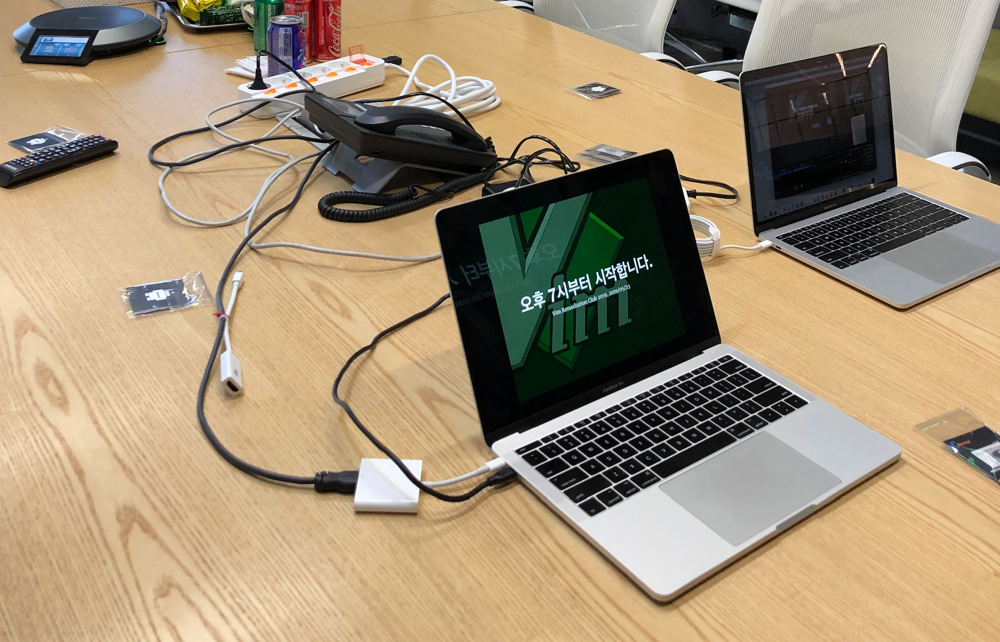

Tweet of KrComet/1128204672836071424
어느 날 이 트윗을 보고, 실제로 이런 느낌으로 특정 도구에 대한 사용자 모임을 해보면 어떨까 싶었다.
‘교정학원’이라는 말에 꽂혀 바로 모임을 만들고 트위터를 통해 참가자를 모집하였다. 늘 그렇듯 작게 시작해야 고생하지 않기 때문에 열 명 남짓한 작은 규모로 제한하였다.
- Vim 교정학원 모집 페이지: https://lqez.github.io/vimrc2019/
트위터와 IRC로 알고 지내던 Vim 사용자 분들이 많이 신청해주신 덕분에 즐거운 시간이 예상되었다. 누가 누구보다 잘 쓴다 못 쓴다를 겨루기 위해 만나는 것이 아니라, 이런 방식으로도 쓰고 있다, 더 좋은 방법이 있지 않을까? 같은 얘기를 나누면 좋지 않을까 생각했다.

행사 시작부터 끝까지 전체를 녹화했다. 앞서 진행했던 다른 행사에서도 방송을 목적으로 촬영했다기보다는, 녹화되고 있다는 것을 의식하면 무의식중에 옳지 않은 발언을 하는 경우를 줄일 수 있지 않을까 싶어 촬영을 진행했었다. 이번에도 같은 목적으로 촬영을 준비했지만, 그에 더불어 라이브 방송을 했을 때 얼마나 많은 원격 시청자가 있을지 궁금하기도 했다. 처음으로 유튜브 실시간 스트리밍을 해봤는데, 이 분야의 선두주자답게 필요한 정보가 충분히 제공되어 방송 준비에 어려움이 없었다. 나는 유튜브가 추천하는 소프트웨어 중, OBS를 이용해 스트리밍을 진행했다.
- Open Broadcaster Software: https://obsproject.com/
좋았던 점
이제까지 주최하거나 참석했던 모임은 대부분 다음과 같았다.
- 발표자가 발표하고, 참가자는 일방적으로 듣는다. 끝나면 질문 시간이 있다.
- 연사 서너명과 중재자(모더레이터)가 미리 짜놓은 순서에 따라 얘기를 나눈다.
- 모두 둘러앉아 발표 없이 얘기한다. 사람이 너무 많으면 10명 이하로 줄여 여러 모임으로 쪼갠다.
참석자가 많은 경우에는 선택지가 몇 개 없지만, 적당히 적은 인원에서는 다른 방법을 시도해보고 싶어, 이번에는 다음과 같이 했다.
- 모든 참가자가 발표한다.
- 발표 중에 다른 참가자가 질문할 수 있다.
발표 중에 다른 사람이 갑자기 질문하는 것이 흐름을 방해할 수도 있지만, 하나의 문제를 해결하는 방법에 여러 접근 방법이 있을 수 있는 경우 – TIMTOWTDI – 에 대해 토론할 때는 이런 방식도 괜찮지 않을까 싶어 적용해보았다. 결과적으로 예상했던 것보다 시간은 늘어졌지만, 발표자가 준비하지 않은 다양한 내용에 대해서 이야기할 수 있는 계기가 됨을 확인했다. 2시간 반 정도로 예상했던 시간을 훌쩍 넘겨 3시간 40분 정도 진행했으니, 시간을 여유 있게 쓸 수 있는 상황이 아닐 때는 적용하기 어렵겠다.
개선해야할 점
앞서 얘기했던 것처럼 적은 인원이여도 중간 중간 다른 얘기를 쉽게 할 수 있는 형태에서는 시간이 늘어지기 마련이다. 그리고 같은 주제에 대해 열 명이 넘는 사람이 순서대로 얘기하니 앞서 했던 얘기를 다시 반복하는 일이 잦아져 늘어진 부분이 있다. 적은 인원이 모여서 모두 발표하는 경우에도 분야를 적당히 나눠 서로 다른 얘기를 다양한 입장에서 나눌 수 있도록 준비하면 좋겠다.
다시 할 수 있을까?
꼭 Vim이 아니어도 Emacs와 Visual Studio Code등의 편집기에 대해서도 다들 각자 어떻게 쓰는지 얘기하면 시간이 가는 줄 모를 것 같다. 모두가 발표하는 모임의 경우 주최하는 사람이 꼭 해당 내용에 대해 많은 것을 알고 있어야 하는 것은 아니겠지만, 그래도 해당 소프트웨어를 자주 사용하는 사람이 모임을 만드는 것이 더 낫지 않을까 싶다. 다른 교정학원이 열리면 무척 즐거울 것 같다.
영상 링크
- 유튜브 주소: https://youtu.be/lNWuf48vgV4